Laborator 2 - Probleme
Problema 1
Scrieți un program care convertește viteza vântului de la „metri pe secundă” la „kilometri pe oră”.
Fereastra aplicației recomandată este prezentată în Fig. 1.1.
Cod sursă - program1.py
Imagine
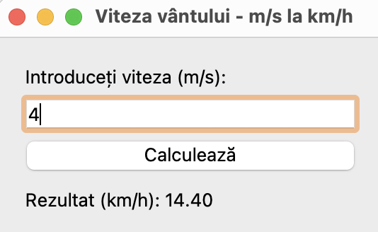
Problema 2
Scrieți un program care convertește viteza vântului de la „metri pe secundă” la „kilometri pe oră”.
Fig. 1.1. Fereastra aplicației este prezentată în Fig. 1.1. Programul trebuie conceput astfel încât utilizatorul
să poată introduce numai un număr întreg pozitiv în câmpul Viteză.
Cod sursă - program2.py
Imagine
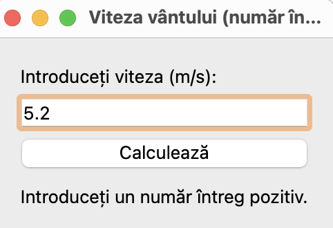
Problema 3
Scrieți un program care convertește viteza vântului de la „metri pe secundă” la „kilometri pe oră”.
Fereastra aplicației trebuie concepută astfel încât utilizatorul să poată introduce numai un număr întreg pozitiv
în câmpul Viteză, iar calculul se efectuează atât la apăsarea butonului Recalculează, cât și la apăsarea tastei <Enter>.
Cod sursă - program3.py
Imagine
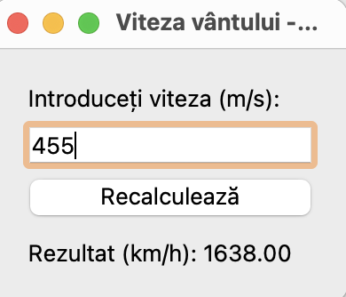
Problema 4
Scrieți un program care convertește masa din livre în kilograme (1 livră = 409,5 grame).
Forma recomandată este prezentată în Fig. 1.2. Programul trebuie conceput astfel încât butonul Recalculare
să fie disponibil numai atunci când utilizatorul a introdus datele brute.
Cod sursă - program4.py
Imagine
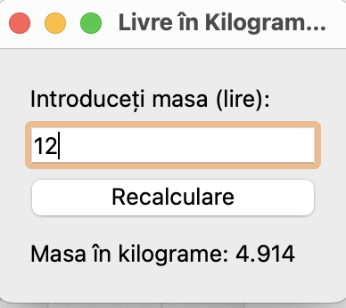
Problema 5
Scrieți un program care convertește masa din lire în kilograme (1 liră = 409,5 grame).
Fereastra aplicației este prezentată în Fig. 1.2. Programul trebuie conceput astfel încât utilizatorul să poată introduce
numai un număr pozitiv (întreg sau fracționar) în câmpul Masa.
Cod sursă - program5.py
Imagine
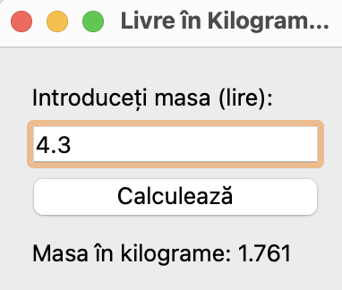
Problema 6
Scrieți un program care să calculeze viteza (km/oră) cu care alergătorul a parcurs distanța.
Fereastra aplicației este prezentată în Fig. 1.3. Numărul de minute este setat ca număr întreg, iar secunde ca număr fracționar.
Cod sursă - program6.py
Imagine
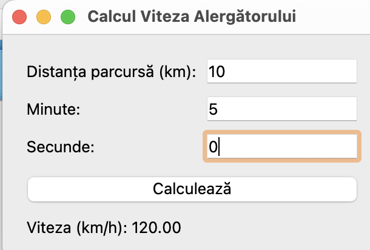
Problema 7
Scrieți un program care să calculeze rezistența curentului într-un circuit electric.
Fereastra aplicației este prezentată în Fig. 1.4. Programul trebuie să fie conceput astfel încât
butonul Calculare să fie disponibil numai atunci când utilizatorul a introdus o valoare a rezistenței.
Cod sursă - program7.py
Imagine
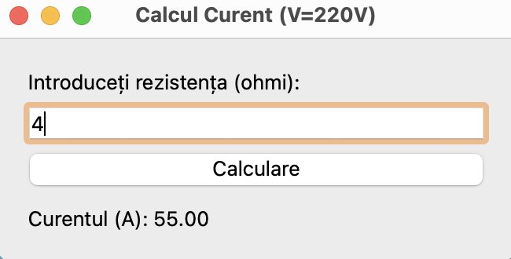
Problema 8
Scrieți un program care să calculeze curentul într-un circuit electric format din două rezistențe conectate în paralel.
Fereastra aplicației este prezentată în Fig. 1.5.
Cod sursă - program8.py
Imagine
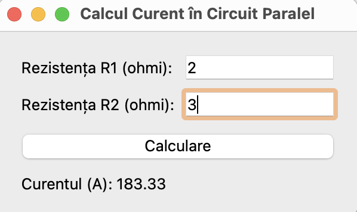
Problema 9
Scrieți un program care să calculeze prețul de cumpărare cu o reducere.
Se acordă o reducere de 1% dacă suma de cumpărare este mai mare de 300 de ruble, 2% - dacă suma este mai mare de 500 de ruble,
3% - dacă suma este mai mare de 1 000. Informațiile despre reducere (procent și valoare) ar trebui să fie afișate într-o
casetă de dialog. Forma recomandată a programului este prezentată în Fig. 1.6.
Cod sursă - program9.py
Imagine
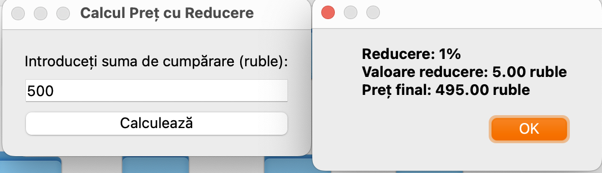
Problema 10
Scrieți un program care să calculeze costul unei achiziții. Utilizatorul trebuie să introducă codul produsului și numărul
de unități. Programul trebuie să genereze o listă de produse. Formularul recomandat este prezentat în Fig. 1.7.
(Dezvoltare. Lista de coduri, denumiri și prețuri se vor introduce dintr-un fișier.)
Cod sursă - program10.py
Imagine
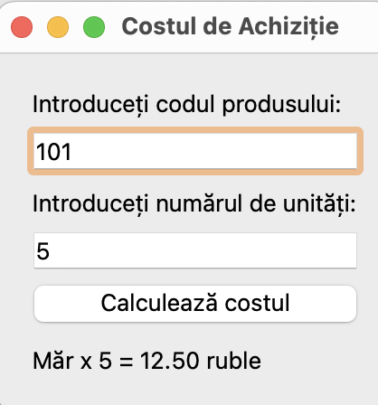
Problema 11
Scrieți un program care să calculeze randamentul unui depozit. Programul trebuie să permită calcularea dobânzii simple și
compuse. Dobânda simplă se calculează la sfârșitul perioadei, iar dobânda compusă se calculează lunar, adăugându-se la suma
inițială pentru calculul lunii următoare. Fereastra aplicației este prezentată în Fig. 1.8.
Cod sursă - program11.py
Imagine
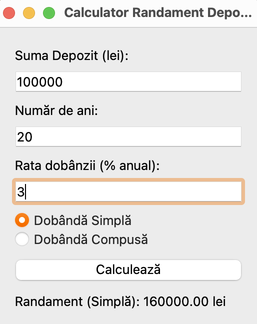
Problema 12
Scrieți un program care să calculeze rezistența unui circuit electric format din două rezistențe.
Rezistențele pot fi conectate în serie sau în paralel. Fereastra aplicației este prezentată în Fig. 1.9.
Dacă rezistența circuitului depășește 1 000 ohmi, rezultatul trebuie afișat în kiloohmi.
Cod sursă - program12.py
Imagine
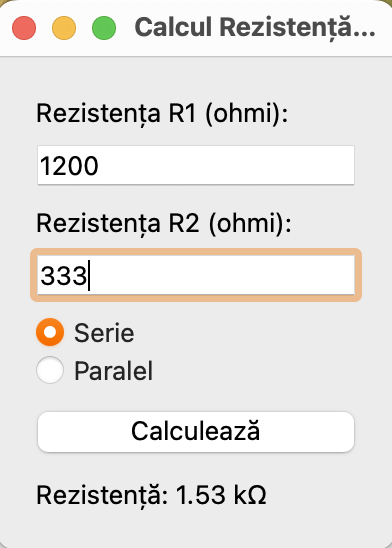
Problema 13
Scrieți un program care să calculeze curentul într-un circuit electric compus din două rezistențe.
Rezistențele pot fi conectate fie în serie, fie în paralel. Fereastra aplicației este prezentată în Fig. 1.10.
Cod sursă - program13.py
Imagine
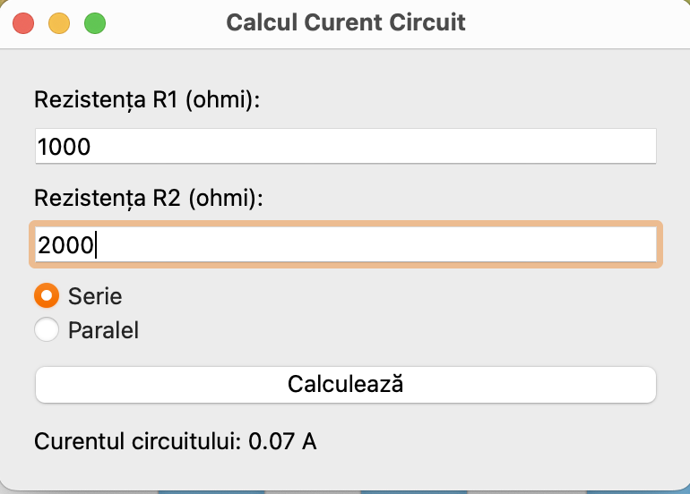
Problema 14
Scrieți un program care, folosind legea lui Ohm, calculează curentul, tensiunea sau rezistența unui circuit electric.
Forma recomandată este prezentată în Fig. 1.11. În timpul rulării programului, textul explicativ al câmpurilor de intrare
se va schimba ca urmare a selectării comutatorului Curent, Tensiune sau Rezistență.
Cod sursă - program14.py
Imagine
Problema 15
Scrieți un program care să calculeze costul unei călătorii cu mașina, de exemplu până la casa părintească.
Fereastra aplicației este prezentată în Fig. 1.12.
Cod sursă - program15.py
Imagine
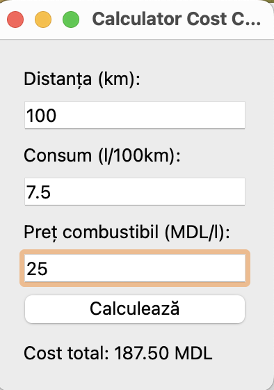
Problema 16
Scrieți un program de calculator care să efectueze adunări și scăderi.
Există două variante de rezolvare a acestei sarcini:
în prima variantă, se creează o procedură separată de gestionare a evenimentului onclick pentru fiecare buton numeric;
în a doua variantă, evenimentul onclick al tuturor butoanelor numerice este gestionat de o singură procedură,
reducând semnificativ textul programului. Forma recomandată este prezentată în Fig. 1.13.
Cod sursă - program16.py
Imagine
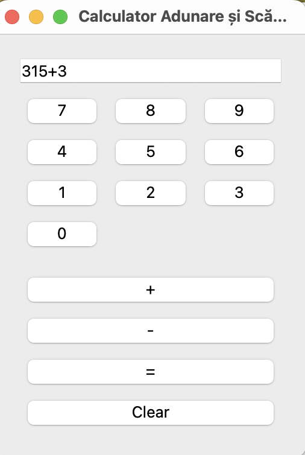
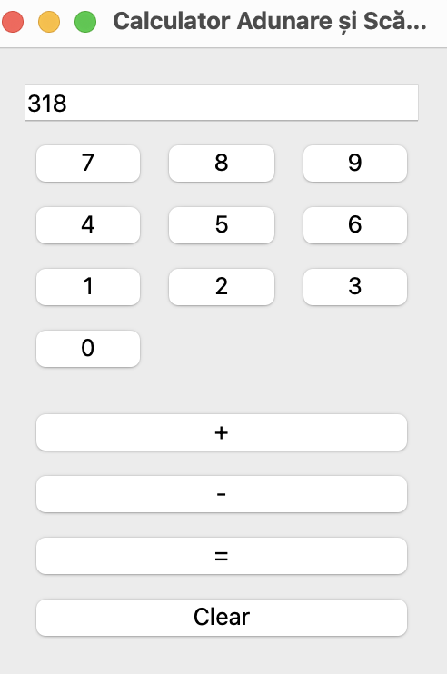